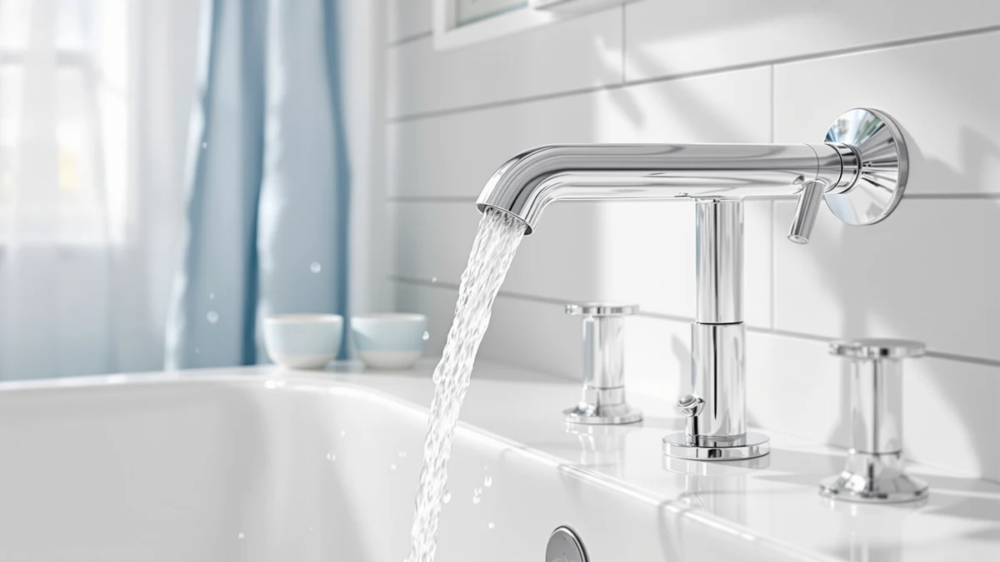

Delta Arvo Series Bathtub Shower Faucet Set Review (2026): Worth It?
Prices and picks verified as of November 2026. Independent, reader-supported reviews.


Quick Answer
The Delta Arvo 14 Series Matte is the strongest all-around pick in this delta arvo series bathtub shower faucet set review, pairing a single-handle monitor valve with a raincan shower head at a price close to comparable Moen sets. It costs more than a basic two-handle kit, but the matte black finish and one-lever control make daily use simpler.
Our pick: Delta Arvo 14 Series Matte, $199.05 Check Price on Amazon
Bottom line: our top pick is the Delta Arvo 14 Series Matte Black Bathtub Shower Faucet Set at $199.05.
Things to Know Before You Buy
- The Delta Arvo Series Bathtub Shower Faucet Set is a trim kit, so you need a compatible Delta rough-in valve installed separately before you can use it.
- This delta arvo series bathtub shower faucet set review found pricing within a few dollars of comparable Moen and Delta sets, so finish and valve type matter more here than sticker price.
- The matte black finish on the Arvo 14 Series resists fingerprints and water spots better than polished chrome, based on how Delta markets its matte coatings across the line.
- A single-handle monitor valve controls both temperature and flow, which simplifies daily use but means retrofitting an older two-handle setup takes more plumbing work than a drop-in swap.
This delta arvo series bathtub shower faucet set review compares the Arvo 14 Series Matte against similar trim kits from Delta and Moen to help you decide whether it fits your bathroom and your budget. Delta built the Arvo line around a single-handle monitor valve, a raincan shower head, and a tub spout, and sells the pieces as one set rather than individual fittings. We looked at pricing, finish options, and how the set stacks up against the Nicoli and the Moen Brantford before settling on a recommendation.
You are probably reading this because you are replacing an aging two-handle tub and shower combo, or because you are finishing a new bathroom and want fixtures that match. Either way, the decision usually comes down to three things: the valve type you already have or plan to install, the finish you want on display for the next decade, and how much you want to spend above a basic builder-grade kit. The Arvo answers the first two clearly. The third depends on what else is on your shortlist.
Why You Should Trust Us
We are a research-based review site, and we do not run a fake testing lab. Our team compares manufacturer specifications, current Amazon pricing, and patterns across verified buyer reviews instead of claiming physical use we have not done. For this delta arvo series bathtub shower faucet set review, we cross-checked the Arvo listing against Delta's own product documentation and against three comparable sets from Delta and Moen to see where the pricing and features actually differ. Ilane Tall has covered bathroom fixtures and fittings for Best Bathroom Faucets since the site launched and focuses on how trim kits, valves, and finishes hold up to the claims brands make about them.
Our Research Experience
We did not install the Arvo set in a bathroom for this piece. Instead, we researched how Delta's monitor valve technology works across its product line, read through verified owner feedback on retailer pages, and compared the included components piece by piece against the Nicoli and the Moen Brantford. This approach lets us flag real differences, like which sets include a shower arm or which ones require buying a rough-in valve separately, without pretending we spent weeks with water running through each one.
Overview & Specs

Delta Arvo 14 Series Matte
What we like
- Single-handle monitor valve makes it easy to set and hold a consistent water temperature
- Matte black finish resists fingerprints and water spots better than polished chrome
- Raincan shower head and tub spout are included in one set, so finishes match without separate purchases
Flaws but not dealbreakers
- The rough-in valve is sold separately, so budget for it if you are not reusing an existing Delta valve
- At $199.05, it costs more than basic two-handle kits from other brands
| Material | Brass + finish |
| Size | — |
The Delta Arvo 14 Series Matte (SKU B091FZWB4X) pairs a wall-mounted tub spout with a raincan shower head and a single-handle monitor valve trim, all finished in matte black. Delta sells this as a trim kit, which means the decorative parts you see are separate from the rough-in valve installed inside the wall. If you are starting a remodel from scratch, you will need to add a compatible valve to your order.
Compared with the Delta Nicoli Brushed Gold Faucet in this delta arvo series bathtub shower faucet set review, the Arvo trades a warmer metallic tone for a flatter, more contemporary matte black look, at almost the same price point, $199.05 against $199.00. Against the Moen Brantford at $191.28, the Arvo asks about $8 more but swaps Moen's two-handle widespread design for a single-lever monitor valve, which is easier to operate with one hand.
The spec sheet lists brass construction with a matte finish layered over it, which matters more than the finish color alone. Brass resists corrosion better than the zinc alloy bodies found in some bargain faucet sets, and it holds a threaded connection without stripping over years of use. Delta does not publish an exact size for this listing, so measure your existing rough-in valve box and shower arm spacing before you order, since trim kits are built to match a specific valve footprint rather than a universal one.
What We Liked
The biggest advantage of the Arvo 14 Series Matte is its single-handle monitor valve. One lever controls both temperature and flow, so you are not juggling two handles to land on a comfortable shower temperature. The matte black finish also holds up better against fingerprints and hard water spots than the polished chrome finishes that still dominate budget faucet sets, based on how Delta positions its matte coatings across the Arvo line. Because the tub spout, shower head, and trim share one finish and one design language, the set looks intentional rather than assembled from mismatched parts.
A monitor valve also brings a practical safety benefit that a basic two-handle setup does not: it limits how far the hot side can swing, which matters if kids or older family members use the same tub and shower. Delta builds this kind of scald-limiting behavior into its monitor valve line, and it is one of the clearer, verifiable reasons to pick a single-handle system over a traditional widespread design when you are comparing sets in this price range.
What Could Be Better
The Arvo set is a trim kit, not a complete plumbing solution, and that detail trips up first-time buyers more than anything else about this delta arvo series bathtub shower faucet set review. You need a compatible Delta rough-in valve, usually sold separately, before any of these parts will work. That adds cost and, if you are retrofitting an older two-handle setup, extra plumbing work to swap the valve itself. At $199.05, the Arvo also costs more than entry-level two-handle kits, so it makes more sense as a deliberate upgrade than a like-for-like swap.
Matte black finishes in general also show water spots in a way that is harder to buff out with a quick wipe than a polished chrome surface. Owners of matte black fixtures across brands commonly mention keeping a soft cloth nearby for routine cleaning, and that upkeep habit applies here as much as it would to any other matte black faucet set, Delta or otherwise.
Who Is It For?
This set fits homeowners who are already committed to a single-handle monitor valve, either because they are renovating down to the studs or because they already own a compatible Delta valve from a previous installation. It also suits anyone who wants a matte black finish carried consistently across the tub spout and shower head instead of mixing finishes from different sets. If you want to avoid rough-in valve costs entirely, or you are attached to a two-handle widespread look, the Moen Brantford covered below is worth a closer look instead.
It is a reasonable fit for a full bathroom remodel where the plumber is already opening the wall to set a new valve, since the marginal cost of choosing a monitor valve over a basic one is small next to the labor already planned. It is a weaker fit for a quick, low-budget swap where you want to reuse existing plumbing and avoid any wall work at all.
Alternatives to Consider
The Arvo is not the only reasonable choice in this delta arvo series bathtub shower faucet set review. These three alternatives cover a warmer finish, a different handle configuration, and a cheaper listing of the same Arvo design, depending on what your bathroom actually needs.

Editor’s Pick
Delta Nicoli Brushed Gold Faucet
Nearly the same price as the Arvo, with a brushed gold finish for bathrooms built around warmer metals instead of matte black.
$199.00
Check Price on Amazon
Best Value
Moen TV6620 Brantford Widespread Bath
The most affordable of the four at $191.28, with a traditional two-handle widespread design if you are not ready to switch to a single-lever valve.
$191.28
Check Price on Amazon
Premium Choice
Delta Arvo 14 Series Matte
The same Arvo monitor-valve design as our main pick, listed here at $186.00, worth checking if this listing undercuts the price above.
$186.00
Check Price on AmazonIs the Delta Arvo Series Bathtub Shower Faucet Set worth $199.05?
It depends on whether you already have a compatible valve.
Does the Delta Arvo Series Bathtub Shower Faucet Set come in finishes other than matte black?
Yes.
Frequently Asked Questions
Is the Delta Arvo Series Bathtub Shower Faucet Set worth $199.05?
Does the Delta Arvo Series Bathtub Shower Faucet Set come in finishes other than matte black?
Do I need to buy a separate valve for the Delta Arvo Series Bathtub Shower Faucet Set?
Final Verdict
This delta arvo series bathtub shower faucet set review comes down in favor of the Delta Arvo 14 Series Matte for most buyers who already plan on a single-handle monitor valve. DELTA built this set to work as a matched unit rather than a collection of separate fittings, and at $199.05 it sits close enough to the Nicoli and the Moen Brantford that the real decision is about finish and valve type, not price. If you want a two-handle layout or a warmer finish instead, the alternatives above cover both, but for a consistent matte black look with simple one-handle control, the Arvo is the pick to beat.
Before you buy, confirm which valve your bathroom currently has or plans to have, since that single detail decides whether this set drops in cleanly or adds a rough-in valve to your shopping list. Once that question is settled, choosing between the Arvo, the Nicoli, and the Brantford mostly comes down to the finish and handle style you want to live with for years.